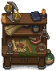

Organ Workbench
| This article is a stub. You can help Graveyard Keeper Wiki by expanding it. |
| Organ Workbench | |
|---|---|
 | |
Basic information
| |
Required Technology :
|
Beginner Healer |
Related pages :
|
Morgue |
Building Information
| |
Horizontal x Vertical :
|
?x? |
Rotatable :
|
False |
Location(s)
| |
| Souls room | |

The Organ Workbench is a workbench introduced with the Better Save Soul DLC, that may be built in the Souls room after you unlock the Beginner Healer technology. The Organ Workbench allows you to use
Sin Shard to craft various items including enhancing organs.
You can increase an organ's  or
or  with the Organ Enhancer, use your Sin Shards to create Boost and Quality fertilizers or craft the Soul Prayers.
with the Organ Enhancer, use your Sin Shards to create Boost and Quality fertilizers or craft the Soul Prayers.
Cost
| Icon | Materials Required | Energy | Notes |
|---|---|---|---|

|
4× Flitch 4× Nails 2× Simple iron parts |
Requires: Beginner Healer
Adds + |
Recipes
| Organ Value Produced | Materials Required | Energy |
|---|---|---|
| 2× Sin Shard 1x organ with no |
- | |
| 3× Sin Shard 1x organ with |
- | |
| 4× Sin Shard 1x organ with |
- | |
| Item Produced | Materials Required | Energy |
| 10× Boost fertilizer I |
10× Peat 2× Sin Shard 2× Hemp |
- |
| 10× Boost fertilizer II |
10× Peat 4× Sin Shard 3× Hemp |
- |
| 10× Quality fertilizer I |
10× Peat 2× Sin Shard 2× Ash |
- |
| 10× Quality fertilizer II |
10× Peat 4× Sin Shard 3× Ash |
- |
| 1× Story |
1× Clean paper 2× Sin Shard 5× Faith |
- |
| 1× Chapter |
3× Clean paper 2× Sin Shard 1× Story |
- |
| 1× |
1× Chapter 2× Sin Shard 1× Story |
- |
| Item Produced | Materials Required | Energy |
| 1× Pray for souls' repose |
1× Chapter 5× Faith 2× Sin Shard |
- |
| 1× Pray for souls' contentment |
1× Chapter 4× Faith 2× Sin Shard |
- |
| 1× Pray for souls' thorough cleansing |
1× Chapter 4× Faith 1× Sin Shard |
- |
| ||||||||